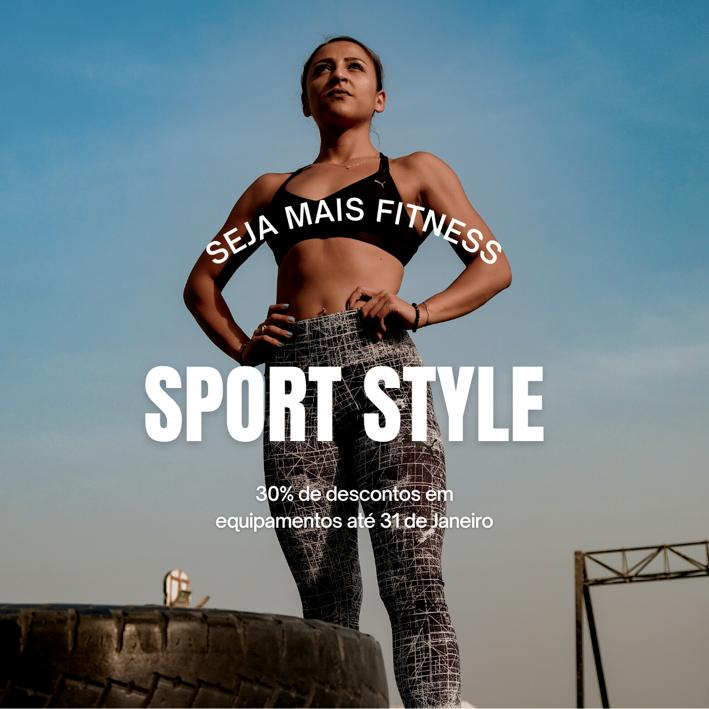
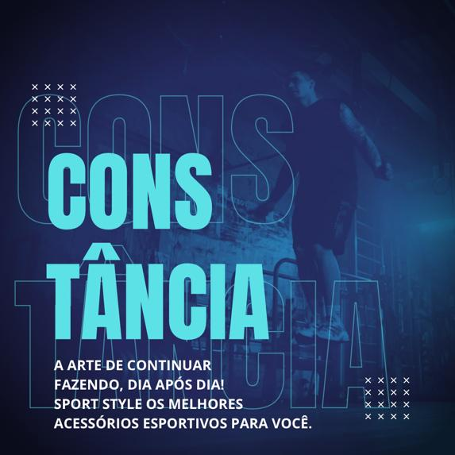

Bem-vindo a Sport Style, nosso site de Artigos Esporivos esportivos!

Explore uma ampla variedade de artigos esportivos de alta qualidade para todas as suas necessidades esportivas. Oferecemos uma seleção abrangente de produtos de marcas renomadas para esportes como futebol, basquete, tênis, corrida, natação e muito mais.
Em nosso site, você encontrará análises de produtos, guias de compras, dicas de treinamento e as últimas notícias e tendências esportivas. Nossa equipe de especialistas está comprometida em fornecer informações valiosas e atualizadas para ajudá-lo a aproveitar ao máximo sua prática esportiva.
Navegue pelo nosso catálogo e encontre os melhores equipamentos esportivos para elevar o seu desempenho. Seja você um atleta profissional ou um entusiasta do esporte, estamos aqui para atender às suas necessidades e ajudá-lo a alcançar seus objetivos esportivos.
Comece a explorar agora mesmo e descubra o mundo dos artigos esportivos de qualidade!

A constância é um princípio fundamental no mundo dos artigos esportivos. Quando se trata de alcançar o máximo desempenho atlético, é necessário dedicar-se consistentemente a treinos, práticas e estilo de vida saudável. Os verdadeiros atletas entendem que a excelência não é conquistada de uma só vez, mas sim através de uma jornada contínua de esforço e dedicação.
Ao adotar uma mentalidade de constância em relação aos artigos esportivos, você estabelece uma rotina sólida e consistente de treinamento. Isso inclui usar os equipamentos adequados e de alta qualidade, como tênis de corrida bem amortecidos, roupas esportivas confortáveis e acessórios que promovam o desempenho.